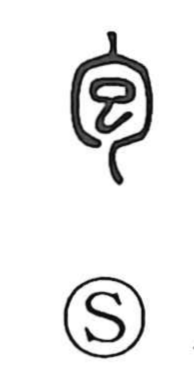

包

Uncategorized
Kun: tsutsumu, kurumu | On: hou
to wrap ・ to cover ・ to contain
Explanation
Originally a pictograph of a human embryo enclosed in the womb, 包 shows the outer curve 勹 as a person seen in side profile, bending protectively around the inner form. The inner element 巳 depicts the fetus itself, its upper part suggesting the head. In later standardized forms this inner shape came to resemble 己, which obscured the fetal image. From the primary sense of being pregnant, the character naturally extended to mean wrapping, covering, and placing something within. Related graphs reinforce this imagery: 孕 shows a figure with a swollen belly in profile, and 身 likewise portrays the body of a pregnant woman.